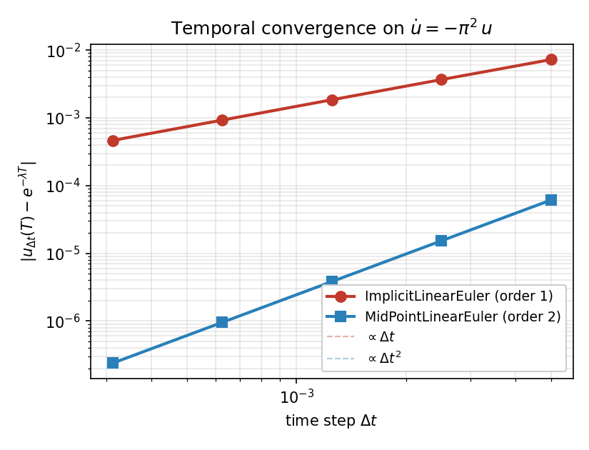
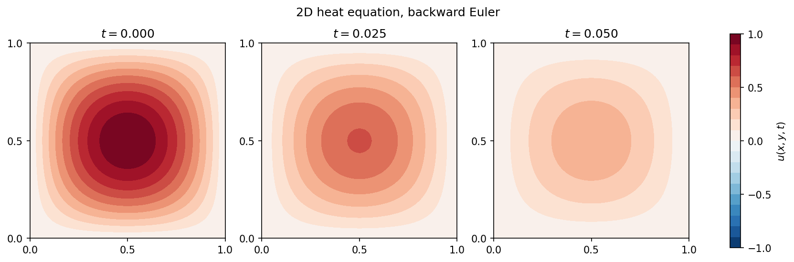

Time Integration¶
Transient problems — heat, wave, transient elasticity, phase-field dynamics — extend the static FEM pipeline with a time-stepping loop. Once the mass and stiffness matrices have been assembled, the semi-discrete weak form is just a system of ODEs in the nodal values
and the job of this chapter is to advance u from one time level to
the next, accurately and stably, while keeping everything
differentiable.
TensorMesh exposes two complementary styles:
A manual time-stepping loop. You assemble the time-stepped operator yourself, call
Condenseronce for the boundary conditions, and write a Pythonforloop that does one linear solve per step. Short, explicit, and the path of least resistance for a one-off problem.The integrator classes in
tensormesh.ode. You overrideforward(t, u)(explicit) orforward_M/forward_A/forward_B(linear-implicit), and callstep(t, u, dt). Useful when you want a generic transient driver that lets you swap one scheme for another without rewriting the loop. The linear-implicit family composes withCondenserthrough three boundary-condition hooks (see Composing with boundary conditions), so static condensation of Dirichlet DOFs works inside the integrator too.
Both styles compose with torch.autograd, so gradients flow back
through every step into initial conditions, material parameters, and
boundary data alike (see Differentiability).
The integrator catalogue¶
tensormesh.ode ships three concrete schemes plus two extensible
base classes:
Class |
Order |
Form |
Use case |
|---|---|---|---|
1 |
\(\dot u = f(t, u)\) |
Cheap explicit RHS; fine for non-stiff problems below the CFL. |
|
1 |
\(M\dot u = A u + B\) |
Heat / diffusion / stiff systems. Unconditionally stable. |
|
2 |
\(M\dot u = A u + B\) |
Same family, second-order accurate (trapezoidal rule). |
|
s-stage |
\(\dot u = f(t, u)\) |
Base class — supply your own Butcher tableau |
|
s-stage |
\(M\dot u = A u + B\) |
Same, for linear-implicit schemes. |
For the explicit family you override forward(t, u) to return the
right-hand side \(f(t, u)\). For the linear-implicit family you
override three methods that return the operators at the current time:
class MyScheme(ImplicitLinearEuler):
def forward_M(self, t): return M_matrix # SparseMatrix, Tensor, or scalar
def forward_A(self, t): return -K_matrix # SparseMatrix, Tensor, or scalar
def forward_B(self, t): return 0.0 # Tensor or scalar
A scalar return is lifted to that multiple of the identity (or to a
constant vector for B), so you can leave any of the three at their
defaults of 1, 1, 0. Each call to step(t0, u0, dt)
returns the new u advanced by one time step; u must be 1D
([D]), so flatten vector-valued problems before stepping.
Worked example 1: a scalar ODE¶
The integrator classes work on plain ODEs the same way they work on FEM systems — you just leave the operators as scalars. Take
whose exact solution is \(u(t) = e^{-\lambda t}\). Both
ImplicitLinearEuler (first order) and
MidPointLinearEuler (second order) accept a
scalar M = 1 and A = -\lambda, so the driver is two short
classes:
import torch
from tensormesh.ode import ImplicitLinearEuler, MidPointLinearEuler
class ScalarIE(ImplicitLinearEuler):
def __init__(self, lam):
super().__init__()
self.lam = lam
def forward_M(self, t): return 1.0
def forward_A(self, t): return -self.lam
def forward_B(self, t): return 0.0
class ScalarMP(MidPointLinearEuler):
def __init__(self, lam):
super().__init__()
self.lam = lam
def forward_M(self, t): return 1.0
def forward_A(self, t): return -self.lam
def forward_B(self, t): return 0.0
lam = torch.pi ** 2
u = torch.ones(1, dtype=torch.float64)
dt = 1e-3
integrator = ScalarMP(lam)
for k in range(50):
u = integrator.step(k * dt, u, dt)
Running the same problem at decreasing \(\Delta t\) and measuring the error at \(T = 0.05\) produces the textbook order-1 and order-2 slopes:
{kind=link}

Fig. 11 Endpoint error vs dt for ImplicitLinearEuler and
MidPointLinearEuler on \(\dot u = -\pi^{2}\,u\). Dashed
reference lines have slopes 1 and 2.¶
The practical reading: spending a higher-order method buys you orders
of magnitude in accuracy at the same step size — at dt = 5e-3
the midpoint rule already beats backward Euler by four orders of
magnitude.
Worked example 2: 2D heat equation¶
For an FEM problem with Dirichlet boundaries, the manual loop is the cleanest pattern. Solve
The semi-discrete form is \(M\dot u = -\kappa\,K\,u\), and one backward-Euler step gives the linear system
The full driver assembles M and K once, builds the
time-stepped operator once, condenses it once, then loops:
import torch
from tensormesh import (Mesh, ElementAssembler,
MassElementAssembler, LaplaceElementAssembler,
Condenser)
mesh = Mesh.gen_rectangle(chara_length=0.025, order=1)
M = MassElementAssembler.from_mesh(mesh)().double()
K = LaplaceElementAssembler.from_mesh(mesh)().double()
kappa = 1.0
dt = 5e-4
# Build the time-stepped operator once and condense it once.
A = M + dt * kappa * K
condenser = Condenser(mesh.boundary_mask)
A_in, _ = condenser(A, torch.zeros(mesh.n_points, dtype=torch.float64))
# Initial condition (already zero on the Dirichlet boundary).
x, y = mesh.points.double()[:, 0], mesh.points.double()[:, 1]
u = torch.sin(torch.pi * x) * torch.sin(torch.pi * y)
# Time stepping: each iteration is one mass-vector product,
# one RHS condensation, one back-substitution, one recovery.
snapshots = [u]
for _ in range(100):
f = M @ u
f_in = condenser.condense_rhs(f)
u_in = A_in.solve(f_in)
u = condenser.recover(u_in)
snapshots.append(u)
The two ingredients that make this loop fast are (a) factorising the
time-stepped operator only once — the per-step solve is a back-substitution
through A_in — and (b) reusing the cached condenser layout via
condense_rhs(). Together they turn what
looks like an order-\(N^{3}\) problem into an order-\(N\)
inner loop.
The solution decays exponentially as \(e^{-2\pi^{2}t}\):
{kind=link}

Fig. 12 Snapshots of \(u(x, y, t)\) at \(t = 0\), \(t = T/2\), and \(t = T\) with \(T = 0.05\), backward Euler, \(\Delta t = 5\!\times\!10^{-4}\), characteristic mesh size \(h = 0.025\).¶
For an animated version, see the rendered heat.mp4 in the
example gallery or under
examples/diffusion/heat/ in the source tree.
Custom Butcher tableaux¶
The two RungeKutta base classes let you supply any Butcher
tableau. To use the classical fourth-order explicit Runge-Kutta on
\(\dot u = f(t, u)\):
import torch
from tensormesh.ode import ExplicitRungeKutta
a = torch.tensor([[0., 0., 0., 0.],
[0.5, 0., 0., 0.],
[0., 0.5, 0., 0.],
[0., 0., 1., 0.]])
b = torch.tensor([1/6, 1/3, 1/3, 1/6])
class MyRK4(ExplicitRungeKutta):
def forward(self, t, u):
return f(t, u) # your problem-specific RHS
integrator = MyRK4(a, b)
for k in range(n_steps):
u = integrator.step(k * dt, u, dt)
The class verifies that a is lower-triangular and that
\(\sum_i b_i = 1\) (to within floating-point tolerance), so you
catch transcription mistakes early. The same pattern with
ImplicitLinearRungeKutta gives you diagonally-implicit
or fully-implicit schemes — supply a non-zero diagonal and the class
will assemble and solve the block stage system for you.
Composing with boundary conditions¶
Static condensation via Condenser (see
Boundary Conditions) is the recommended way to enforce
Dirichlet conditions in TensorMesh. Both time-integration styles
support it; the only difference is where the three condenser calls
go.
Mental model — what each solve is for
The two styles differ in what the linear solve is solving for,
and that single fact dictates which Condenser calls are correct:
Manual loop → the unknown is the state \(u^{n+1}\). It takes the prescribed value \(u_o\) on the boundary, so you use the BC-value-aware calls (
condense_rhssubtracts \(K_{io}\,u_o\);recoverwrites \(u_o\) back into the boundary slots).Integrator hooks → the unknown is a stage slope \(k_i \approx \dot u\). A Dirichlet DOF is fixed in time, so \(\dot u = 0\) there whatever \(u_o\) is — the slope is zero on the boundary. You use the BC-value-free projections (
restrict/prolong, which apply zero on the boundary in both directions).
The full-DOF state’s boundary value is carried along by \(u_0\) through the RK update \(u_{n+1} = u_0 + h\sum_i b_i k_i\); it is not re-imposed by the stage recovery.
At a glance, the same three operations map across the two styles like this — the rest of this section is just the detail behind each row:
Operation |
Manual loop (state \(u\)) |
Integrator hooks (slope \(k\)) |
|---|---|---|
Condense the operator |
|
|
Project the RHS down |
|
|
Lift the solution back |
|
|
In a manual loop¶
The pattern is the same one used in Worked example 2:
call
condenser(A, _)once, before the loop, to factorise the time-stepped operator on the interior DOFs;call
condenser.condense_rhs(f)every step to project the new RHS down to the interior;call
condenser.recover(u_in)after every solve to glue boundary values back in.
For time-varying boundary data, swap in the new values between steps
with update_dirichlet() — the sparsity
layout is cached and survives the update, so this call is cheap.
Through the integrator classes¶
ImplicitLinearRungeKutta (and its concrete
subclasses) exposes three hooks that the step() method calls in
the right places for static condensation to work end-to-end. Each
hook is a no-op by default — override only the ones you need.
Hook |
Called by |
For |
|---|---|---|
|
once per |
the condensed inner block, |
|
once per stage RHS |
the restriction to inner DOFs, |
|
once per stage, after the solve |
the prolongation to full DOF with zero in the boundary slots,
|
The fourth hook, post_solve(u), runs after the stage slopes have
already been lifted and combined with \(u_0\), so u is
always full-DOF when it sees you. Use it for things that act on the
final state (clamping, normalisation, projection onto a manifold)
rather than for boundary recovery.
The same three hooks cover multi-stage schemes unchanged: step()
calls them once per stage (pre_solve_lhs once per [i][j]
block), so a MidPointLinearEuler or a custom
ImplicitLinearRungeKutta tableau wires up
exactly like the backward-Euler example below.
Putting them together, a heat-equation driver becomes:
import torch
from tensormesh import (Mesh, MassElementAssembler,
LaplaceElementAssembler, Condenser)
from tensormesh.ode import ImplicitLinearEuler
class HeatStepper(ImplicitLinearEuler):
"""M du/dt = -kappa^2 K u, homogeneous Dirichlet via Condenser."""
def __init__(self, M, K, kappa, condenser):
super().__init__()
self._M, self._A, self._cd = M, -kappa * kappa * K, condenser
def forward_M(self, t): return self._M
def forward_A(self, t): return self._A
def forward_B(self, t): return 0.0
def pre_solve_lhs(self, K): return self._cd(K)[0] # condense stage block
def pre_solve_rhs(self, f): return self._cd.restrict(f) # NOT condense_rhs
def recover_stage(self, k): return self._cd.prolong(k) # NOT recover
# Same mesh and initial condition as Worked example 2.
mesh = Mesh.gen_rectangle(chara_length=0.025, order=1)
M = MassElementAssembler.from_mesh(mesh)().double()
K = LaplaceElementAssembler.from_mesh(mesh)().double()
stepper = HeatStepper(M, K, kappa=1.0,
condenser=Condenser(mesh.boundary_mask))
x, y = mesh.points.double()[:, 0], mesh.points.double()[:, 1]
u = torch.sin(torch.pi * x) * torch.sin(torch.pi * y)
dt = 5e-4
for step in range(100):
u = stepper.step(step * dt, u, dt)
The examples/diffusion/heat/ directory ships both versions:
heat.py (manual loop) and heat_ode.py (integrator class).
They produce identical snapshots to machine precision — try them
side by side.
Why restrict / prolong and not condense_rhs / recover¶
The two integrator hooks operate on the stage slope
\(k_i \approx \dot u\), not on the state \(u\) itself. At a
Dirichlet DOF \(u\) is held fixed in time, so \(\dot u = 0\)
there regardless of the prescribed value. The two BC-value-aware
methods on Condenser are designed for the
state:
condense_rhs()subtracts \(K_{io}\,u_o\) from the inner RHS to account for the state’s prescribed boundary values;recover()writes \(u_o\) into the boundary slots of the lifted solution.
Use those when condensing the state-space system (the manual loop).
For stage slopes inside the integrator, use the BC-value-free
projections restrict() and
prolong(), which apply zero on the
boundary in both directions. The difference vanishes for homogeneous
Dirichlet (where \(u_o = 0\)), but matters as soon as the
prescribed values are non-zero.
The bug is invisible under homogeneous Dirichlet
Mixing up the two pairs costs nothing when \(u_o = 0\), which is
exactly why it slips through. Make it non-zero and it shows
immediately. Take the heat problem above but hold the whole boundary
at \(u_o = 1\) (interior starting at zero), backward Euler,
\(\Delta t = 10^{-2}\), 40 steps, and measure against the manual
state-space loop (condense_rhs / recover) as the reference:
Hook wiring |
Interior error vs reference |
Boundary (should stay |
|---|---|---|
|
|
|
|
|
|
|
|
|
condense_rhs subtracts a \(-K_{io}\,u_o\) term that the slope
RHS never had, polluting the interior solution. recover writes
\(u_o\) into the slope’s boundary slots, so the RK update adds
\(h\,u_o\) to the boundary every step (here
\(40 \times 10^{-2} \times 1 = 0.4\) of drift), breaking
\(u_{n+1} = u_n + h\sum_i b_i k_i\). The restrict / prolong
pair reproduces the manual loop to machine precision.
Explicit schemes¶
ExplicitRungeKutta has no linear solve and
therefore no condensation hooks. The natural place for boundary
conditions is inside the user-supplied forward(t, u): return
\(f\) with f[boundary] = 0 and the update
\(u_{n+1} = u_n + h \sum_i b_i k_i\) preserves
\(u_{\text{boundary}}\) automatically.
import torch
from tensormesh import Mesh, MassElementAssembler, LaplaceElementAssembler
from tensormesh.ode import ExplicitEuler
mesh = Mesh.gen_rectangle(chara_length=0.08, order=1)
M = MassElementAssembler.from_mesh(mesh)().double()
K = LaplaceElementAssembler.from_mesh(mesh)().double()
bmask = mesh.boundary_mask
class HeatExplicit(ExplicitEuler):
"""du/dt = M^{-1}(-kappa^2 K u), homogeneous Dirichlet."""
def forward(self, t, u):
f = M.solve(-(K @ u)) # semi-discrete RHS (lump M in production)
f[bmask] = 0.0 # Dirichlet DOFs have zero time-derivative
return f
x, y = mesh.points.double()[:, 0], mesh.points.double()[:, 1]
u = torch.sin(torch.pi * x) * torch.sin(torch.pi * y)
dt = 5e-5 # explicit -> small (CFL-limited) step
for step in range(50):
u = HeatExplicit().step(step * dt, u, dt)
Because the boundary slope is forced to zero, u stays at its
initial boundary value (0 here) for free. For time-varying
Dirichlet data, write the analytical \(\dot u_{\text{b}}(t)\)
into f[boundary] instead of zero, or overwrite the boundary
slots of u between step() calls.
Differentiability¶
Every step is built on a differentiable solve (see Sparse Solvers), so back-propagation through a transient simulation is a no-op:
kappa = torch.tensor(1.0, requires_grad=True)
u = run_heat_solver(mesh, kappa, dt=5e-4, n_steps=100)
loss = (u - u_target).pow(2).sum()
loss.backward()
print(kappa.grad) # gradient through 100 implicit solves
This is what makes transient inverse problems, parameter identification, and gradient-based PDE design straightforward in TensorMesh — see Differentiability for the longer story.
What’s next¶
Sparse Solvers — the solver behind every step.
Differentiability — backprop through a transient solve to optimise parameters or initial conditions.
Batched Workflows — batched initial conditions or parameters with the same transient driver.
Example Gallery — heat, wave, and transient elasticity demos with rendered animations.